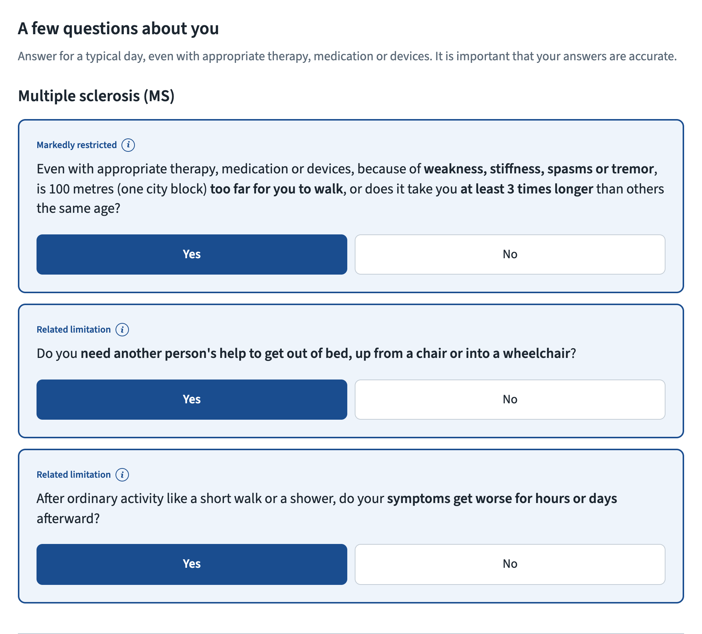

Applying for the Disability Tax Credit Certificate | Options
There are three different options when applying for the Disability Tax Credit Certificate. Selecting from the options below will help to determine which path is best for the applicant.
The application process
- Step 1
Review the DTC application process
The application is the CRA's Form T2201, the Disability Tax Credit Certificate. We help the applicant complete it.
See the application - Step 2
Answer yes or no questions
The applicant answers yes or no questions about how their medical conditions affect them on a day-to-day basis.
See example questions

- Step 3
A DTC professional prepares the application
A DTC professional crafts the application in a compelling manner, using the language the CRA uses to assess eligibility, to give the applicant the best chance of qualifying.
- Step 4
The application is emailed to the applicant
The completed application is emailed directly to the applicant within 48 to 72 hours.
- Step 5
The doctor reviews and signs
The applicant emails the application to their doctor, or prints it and takes it to them, for review and signature. It is a fillable PDF, so the doctor can change or add anything they want, and so can the applicant.
- Step 6
Submit to the CRA for approval
Once the doctor has signed it, the applicant submits the application to the CRA. The CRA reviews the application, and one of three things happens:
- Approved. The application meets the criteria.
- Rejected right away. This typically happens when information is incomplete, or when the application is complete but does not match the criteria the CRA is looking for.
- Review. The CRA examines the application in greater detail and typically requests additional information from the medical professional. A decision then takes anywhere from 8 to 16 weeks.
- Step 7
The decision
- Approval. The CRA sends the applicant a notice of determination informing them that they have been approved. We then apply for the other programs the DTC has opened up for the applicant. Which ones depends on their circumstances, and is known once we enter their information.
- Denial. The applicant can file an appeal.
Recommendations
There are three recommendations below. The recommendation highlighted in green is likely the optimal path for the applicant.
To review the benefits of qualifying for the DTC, .
| Benefit or credit | Amount | Frequency | Income requirement |
|---|---|---|---|
| Tax refund for past years | The CRA can adjust tax returns up to 10 years back. The refund may be as high as $40,000. | Upon qualification(if applicable) | Yes |
| Tax refund every year going forward | The disability amount lowers income tax every year, which can mean a yearly refund. | Annual | Yes |
| Disability amount (tax credit) | $10,341 for 2026, plus a supplement of up to $6,032 for a person under 18. | Annual | Yes |
| Child Disability Benefit | A tax-free benefit of up to $290 a month ($3,480 a year), from July 2026 to June 2027. | Monthly | No |
| Canada Disability Benefit | Up to $204.20 a month ($2,450.40 a year), from July 2026 to June 2027, for adults aged 18 to 64. | Monthly | No |
| Canada Disability Savings Bond (part of the RDSP) | Up to $1,000 a year and $20,000 in a lifetime, with no deposit needed. Age 49 and under.* | Annual | No |
| Canada Disability Savings Grant (part of the RDSP) | The government matches up to 300% of deposits, up to $3,500 a year and $70,000 in a lifetime. Age 49 and under.* | Annual(deposits are required) | No |
| Canada caregiver amount | Up to $8,773 for an adult dependant, or $2,740 for a child (2026), claimed by a supporting family member. | Annual | Yes |
| Medical expenses | Additional expenses can be claimed, such as attendant care. | Annual | Yes |
* Until December 31 of the year the person turns 49.
All amounts are federal, for 2026, and depend on income and other rules. Each of these requires an approved disability tax credit.